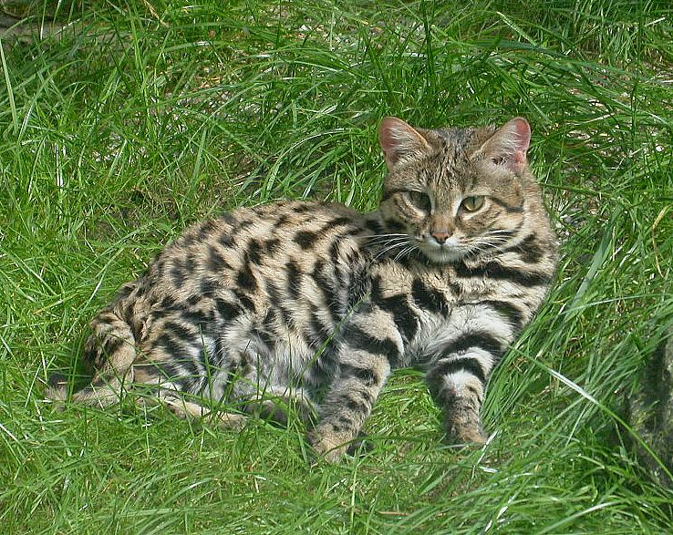

Кіт
Матеріал з Вікіпедії — вільної енциклопедії.
Запит «Коти» перенаправляє сюди; див. також інші значення.
Кіт [1] [2] [3] (Felis) — рід хижих ссавців родини котових (Felidae). У деяких старіших системах класифікації до нього зараховували всіх представників малих кішок (Felinae), проте зараз безпосередньо до роду відносяться лише кілька видів невеликих тварин, що мешкають у Євразії та Африці.
Найвідомішим представником цього роду є свійський кіт — підвид кота лісового.
За розміром найменшим представником роду є вид мураховий тигр довжина тіла і голови якого становить від 38 до 44 см. Найбільшим є кіт очеретяний із довжиною тіла і голови від 62 до 76 см [4]. Види котів (Felis) мешкають у широкому різновиді природних середовищ, від болотяних до пустель, і харчуються здебільшого малими мишоподібними, птахами й іншими дрібними тваринами.
Генетичні дослідження показують, що Кіт (Felis), Манул (Otocolobus) і Азійський кіт (Prionailurus) походять від Євразійського прародителя, що існував близько 6,2 мільйонів років тому, і що види Котів розділилися від 3,04 до 0.99 мільйонів років тому [5] [6].
Ентимологія
Праслов. *kotъ , можливо, запозичене з лат. cattus — прямо або через германське посередництво; подібна назва для кота існує й у не індоєвропейських мовах ( араб. qitt — «кіт»), що дає підставу розглядати цю назву як давнє мандрівне слово суспільно-етнічних культур Європи й Азії. [7]
Види та підвиди
Рід Кіт
-
вид
Кіт очеретяний
(Felis chaus)
- підвид Felis chaus chaus Schreber, 1777
- підвид Felis chaus affinis Gray, 1830
- підвид Felis chaus fulvidina Thomas, 1928
- вид Кіт чорноногий (Felis nigripes)
-
вид
Кіт барханний
(Felis margarita)
- підвид Felis margarita margarita Loche, 1858
- підвид Felis margarita thinobia (Ognev, 1927)
-
вид
Кіт степовий
(Felis lybica)
- підвид Felis lybica lybica Forster, 1780
-
підвид
Кіт свійський
(Felis lybica catus Linnaeus, 1758)
- популяція корсиканський дикий кіт
- підвид Felis lybica cafra Desmarest, 1822
- підвид Felis lybica ornata Gray, 1830
- вид Кіт китайський (Felis bieti)
- вид Кіт лісовий (Felis silvestris)
Викопні види:
Психологія
Деякі рослини, наприклад, валеріана або котяча м'ята, виділяють речовини, які впливають на кішок (особливо на самців) наркотичним шляхом. Проте не всі коти реагують на їхній запах, і не на всіх ці рослини впливають однаково. У деяких котів валеріана може викликати отруєння.
Галерея
- Кіт очеретяний (Felis chaus)
-  Кіт чорноногий (Felis nigripes)
- Кіт барханний (Felis margarita)
-
") Кіт степовий (Felis lybica)
Кіт степовий (Felis lybica)
-
") Кіт китайський (Felis bieti)
Кіт китайський (Felis bieti)
-
") Кіт лісовий (Felis silvestris)
Кіт лісовий (Felis silvestris)
Див. також
Джерела
- Stephen J. O'Brien and Warren E. Johnson. The Evolution of Cats (2007).
- Етимологічний словник української мови. Т. 2: Д — Копці / Укл.: Н. С. Родзевич та ін. / АН УРСР. Ін-т мовознавства ім. О. О. Потебні. — К.: Наук. думка, 1985.
Примітки
-
 Раковський І. (гол. ред.). Українська загальна енцикльопедія. — Львів, Станиславів, Коломия : Рідна
школа, 1933. — Т. 2. — С. 275.
Раковський І. (гол. ред.). Українська загальна енцикльопедія. — Львів, Станиславів, Коломия : Рідна
школа, 1933. — Т. 2. — С. 275.
-
Маркевич О. П. Російсько-українсько-латинський зоологічний словник. Номенклатура. — Київ : Наук.
думка, 1983. — С. 190.
-
Загороднюк І., Харчук С.
Називничі засади опису таксономічного різноманіття ссавців Європи.
Науковий вісник НУБіП України. Серія: лісівництво та декоративне садівництво. — 2011. — Вип. 164. —
№3. — С. 124–135.
-
Pocock, R. I. (1951). Catalogue of the genus Felis. London: British Museum (Natural
History).
-
Johnson, W. E.; Eizirik, E.; Pecon-Slattery, J.; Murphy, W. J.; Antunes, A.; Teeling, E.; O'Brien, S.
J. (2006). The Late Miocene Radiation of Modern Felidae: A Genetic Assessment. Science 311 (5757):
73–77.
Bibcode:2006Sci...311...73J.
PMID 16400146.
doi:10.1126/science.1122277.
-
Pecon-Slattery, J.; O'Brien, S. J. (1998).
Pecon-Slattery, J.; O'Brien, S. J. (1998). Patterns of Y and X chromosome DNA sequence
divergence during the Felidae radiation.
Genetics 148 (3): 1245–1255
PMC 1460026.
PMID 9539439.
Архів
оригіналу
за 3 травня 2009. Процитовано 17 березня 2018.
-
Етимологічний словник української мови : в 7 т. / редкол.:
О. С. Мельничук
(гол. ред.) та ін. — К. :
Наукова думка,
1989. — Т. 3 : Кора — М / Ін-т мовознавства ім. О. О. Потебні АН УРСР ; укл.: Р. В.
Болдирєв та ін. — 552 с. —
ISBN 5-12-001263-9.

Це незавершена стаття з
теріології.
Ви можете
допомогти проєкту,
виправивши або дописавши її.